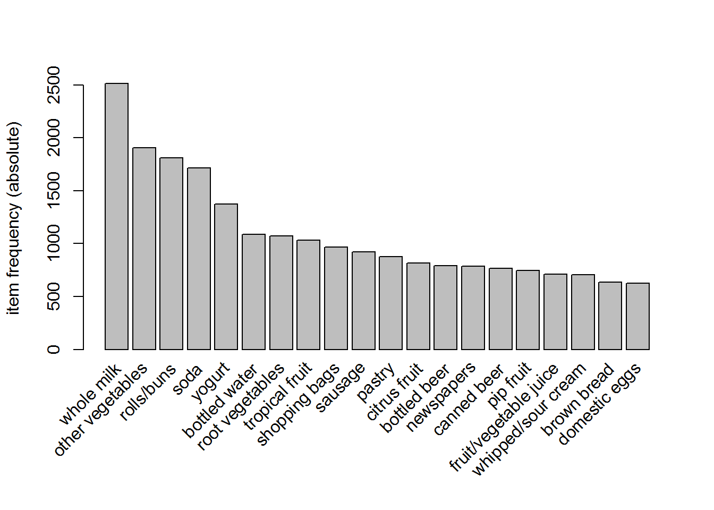
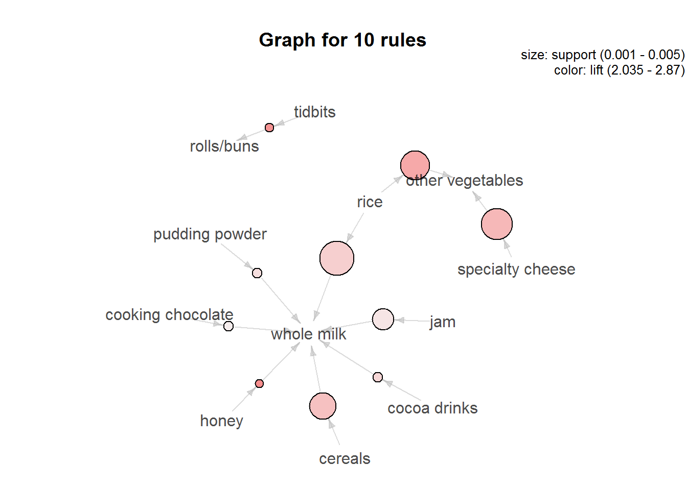

4. Phân tích giỏ hàng¶
Phân tích giỏ hàng là 1 phương pháp phân tích với mục đích là để tìm ra
được tổ hợp các sản phẩm hay được khách hàng mua cùng nhau. Phân tích
giỏ hàng là một nhánh của Frequent Pattern Mining (FPM) là kỹ thuật được
dùng trong việc phân tích các hành vi lặp đi lặp lại giữa các yêu tố có
liên hệ với nhau. FPM được sử dụng đặc biệt rộng rãi trong các ngành như
ecommerce, banking, retail… giúp người bán có thể phân tích hành vi mua
sắm của khách hàng. Phương pháp phân tích thương được dùng nhất là sử
dụng thuật toánapriori
4.1. Các khái niệm cơ bản¶
Trong phân tích giỏ hàng, chỉ có 5 thuật ngữ đơn giản ta cần phải nhớ là
transaction, rule, support, confidence và lift
- Item: Sản phẩm chứa trong giỏ hàng
- Transaction: Giao dịch là một hoặc một nhóm các sản phẩm được mua khi khách hàng thực hiện trong cùng một giao dịch
- Rule: Rule là một quy tắc thể hiện mối quan hệ giữa các sản phẩm
có trong cùng một giỏ hàng, có dạng
nếu A, thì B.
Ví dụ:
{Bánh mỳ} => {Sữa}: Nếu khách hàng mua bánh mỳ thì khách hàng sẽ mua thêm sữa
- Support：Tần suất (dưới dạng phần trăm) xuất hiện của các quy tắc trong tổng số các giao dịch.
Ví dụ: Một cửa hàng trong tháng 1 có 100 khách hàng, mỗi khách hàng thực hiện một giao dịch. Trong đó 50 khách hàng mua sản phẩm A, 75 khách hàng mua sản phẩm B, và 25 khách hàng mua cả sản phẩm A và B - Support(sản phẩm A) = 50% - Support(Sản phẩm A, sản phẩm B) = 25%
- Confidence: Cơ hội mua sản phẩm tiếp theo trong hành vi giao dịch của khác hàng.
> Ví dụ: Confidence (sản phẩm A , sản phẩm B) = 25/50 = 50% - Tức là nếu 1 người mua sản phẩm A, thì xác suất họ cũng mua sản phẩm B là 50%
Lift: Nếu khách hàng mua sản phẩm A thì khả năng họ mua sản phẩm B sẽ tăng lên bao nhiêu %
\[Lift(i_{m} => i_{n}) = \frac{support(i_{m}\frown i_{n})}{support(i_{m}) * support (i_{n})} = \frac{Confidence (i_{m} => i_{n})}{support (i_{n})}\]- Lift có thể cho 3 loại giá trị
- Lift > 1: tức là những sản phẩm ở vế trái của rule sẽ làm tăng khả năng xảy ra của những sản phẩm ở vế phải của rule (2 sản phẩm bổ trợ). Ví dụ, mua bia sẽ mua thêm lạc.
- Lift < 1: tức là những sản phẩm ở vế trái của rule sẽ làm giảm khả năng xảy ra của những sản phẩm ở vế phải của rule ( 2 sản phẩm thay thế được cho nhau). Ví dụ, mua bia sẽ không mua thêm cafe.
- Lift = 1: Các sản phẩm ở vế trái và vế phải xuất hiện độc lập với nhau về mặt thống kê, ta không thể đưa ra kết luận về tương quan giữa các sản phẩm.
- Lift có thể cho 3 loại giá trị
4.2. Cách thực hiện mô hình¶
library(dplyr)
library(arules)
library(arulesViz)
data("Groceries")
Dữ liệu Groceries chứa gần 10,000 giao dịch với hơn 160 sản phẩm
khác nhau. Ta có thể xem chi tiết dưới đây.
# Thống kê giao dịch
summary(Groceries)
## transactions as itemMatrix in sparse format with
## 9835 rows (elements/itemsets/transactions) and
## 169 columns (items) and a density of 0.02609146
##
## most frequent items:
## whole milk other vegetables rolls/buns soda
## 2513 1903 1809 1715
## yogurt (Other)
## 1372 34055
##
## element (itemset/transaction) length distribution:
## sizes
## 1 2 3 4 5 6 7 8 9 10 11 12 13 14 15
## 2159 1643 1299 1005 855 645 545 438 350 246 182 117 78 77 55
## 16 17 18 19 20 21 22 23 24 26 27 28 29 32
## 46 29 14 14 9 11 4 6 1 1 1 1 3 1
##
## Min. 1st Qu. Median Mean 3rd Qu. Max.
## 1.000 2.000 3.000 4.409 6.000 32.000
##
## includes extended item information - examples:
## labels level2 level1
## 1 frankfurter sausage meat and sausage
## 2 sausage sausage meat and sausage
## 3 liver loaf sausage meat and sausage
Lưu ý: Dữ liệu phục vụ phân tích giỏ hàng không phải là dữ liệu dạng
dataframe thông thường mà được cấu trúc định dạng transaction.
# Sử dụng dữ liệu groceries
class(Groceries)
## [1] "transactions"
## attr(,"package")
## [1] "arules"
str(Groceries)
## Formal class 'transactions' [package "arules"] with 3 slots
## ..@ data :Formal class 'ngCMatrix' [package "Matrix"] with 5 slots
## .. .. ..@ i : int [1:43367] 13 60 69 78 14 29 98 24 15 29 ...
## .. .. ..@ p : int [1:9836] 0 4 7 8 12 16 21 22 27 28 ...
## .. .. ..@ Dim : int [1:2] 169 9835
## .. .. ..@ Dimnames:List of 2
## .. .. .. ..$ : NULL
## .. .. .. ..$ : NULL
## .. .. ..@ factors : list()
## ..@ itemInfo :'data.frame': 169 obs. of 3 variables:
## .. ..$ labels: chr [1:169] "frankfurter" "sausage" "liver loaf" "ham" ...
## .. ..$ level2: Factor w/ 55 levels "baby food","bags",..: 44 44 44 44 44 44 44 42 42 41 ...
## .. ..$ level1: Factor w/ 10 levels "canned food",..: 6 6 6 6 6 6 6 6 6 6 ...
## ..@ itemsetInfo:'data.frame': 0 obs. of 0 variables
# Xem 5 giao dịch đầu tiên
Groceries[1:5] %>% inspect
## items
## 1 {citrus fruit,
## semi-finished bread,
## margarine,
## ready soups}
## 2 {tropical fruit,
## yogurt,
## coffee}
## 3 {whole milk}
## 4 {pip fruit,
## yogurt,
## cream cheese ,
## meat spreads}
## 5 {other vegetables,
## whole milk,
## condensed milk,
## long life bakery product}
Trong thực tế, khi triển khai phân tích, việc đầu tiên ta cần làm là
biến đổi từ định dạng dataframe sang định dạng transactions. Ta có
thể biến đổi định dạng của dataframe về transactions với hàm as.
df <- data.frame(
prod_1 = c(1,0, 1) %>% as.factor,
prod_2 = c(0,0, 1) %>% as.factor,
prod_3 = c(1, 0, 0) %>% as.factor
)
df
## prod_1 prod_2 prod_3
## 1 1 0 1
## 2 0 0 0
## 3 1 1 0
df %>% select(-1) %>% as("transactions") %>% inspect
## items transactionID
## 1 {prod_2=0,prod_3=1} 1
## 2 {prod_2=0,prod_3=0} 2
## 3 {prod_2=1,prod_3=0} 3
Phân tích khám phá nhanh các sản phẩm được mua nhiều nhất.
# Vẽ barchart đơn giản về các item phổ biến nhất
itemFrequencyPlot(Groceries,
type = "absolute",
topN = 20, decreasing = T)

4.3. Ba câu hỏi khi phân tích giỏ hàng¶
Khi sử dụng kỹ thuật phân tích giỏ hàng, có 3 câu hỏi thường gặp về mặt kinh doanh cần phải trả lời là:
- Các sản phẩm nào hay được mua cùng nhau?
- Nếu khách hàng mua sản phẩm A rồi thì sẽ hay mua tiếp sản phẩm nào?
- Khách hàng nếu mua sản phẩm B thì trước đấy hay mua sản phẩm nào?
4.3.1. Các sản phẩm nào hay được mua cùng nhau¶
rules <- apriori(Groceries,
parameter = list(supp = 0.001,
# support >= 0.1%
conf = 0.5))
## Apriori
##
## Parameter specification:
## confidence minval smax arem aval originalSupport support minlen maxlen
## 0.5 0.1 1 none FALSE TRUE 0.001 1 10
## target ext
## rules FALSE
##
## Algorithmic control:
## filter tree heap memopt load sort verbose
## 0.1 TRUE TRUE FALSE TRUE 2 TRUE
##
## Absolute minimum support count: 9
##
## set item appearances ...[0 item(s)] done [0.00s].
## set transactions ...[169 item(s), 9835 transaction(s)] done [0.00s].
## sorting and recoding items ... [157 item(s)] done [0.00s].
## creating transaction tree ... done [0.00s].
## checking subsets of size 1 2 3 4 5 6 done [0.01s].
## writing ... [5668 rule(s)] done [0.00s].
## creating S4 object ... done [0.00s].
# confidence >= 50%
# Tổng hợp các rules
rules %>% summary
## set of 5668 rules
##
## rule length distribution (lhs + rhs):sizes
## 2 3 4 5 6
## 11 1461 3211 939 46
##
## Min. 1st Qu. Median Mean 3rd Qu. Max.
## 2.00 3.00 4.00 3.92 4.00 6.00
##
## summary of quality measures:
## support confidence lift
## Min. :0.001017 Min. :0.5000 Min. : 1.957
## 1st Qu.:0.001118 1st Qu.:0.5455 1st Qu.: 2.464
## Median :0.001322 Median :0.6000 Median : 2.899
## Mean :0.001668 Mean :0.6250 Mean : 3.262
## 3rd Qu.:0.001729 3rd Qu.:0.6842 3rd Qu.: 3.691
## Max. :0.022267 Max. :1.0000 Max. :18.996
##
## mining info:
## data ntransactions support confidence
## Groceries 9835 0.001 0.5
Như vậy, khi khai phá dữ liệu của tập Groceries, ta có 5668
rules thỏa mãn hai điều kiện:
- Tần suất xuất hiện đạt ít nhất 1%
- Confidence của rule đạt ít nhất 50%
# Top 5 rules có lift cao nhất
rules %>%
sort(by = "lift") %>%
head(5) %>%
as("data.frame")
## rules support
## 53 {Instant food products,soda} => {hamburger meat} 0.001220132
## 37 {soda,popcorn} => {salty snack} 0.001220132
## 444 {flour,baking powder} => {sugar} 0.001016777
## 327 {ham,processed cheese} => {white bread} 0.001931876
## 55 {whole milk,Instant food products} => {hamburger meat} 0.001525165
## confidence lift
## 53 0.6315789 18.99565
## 37 0.6315789 16.69779
## 444 0.5555556 16.40807
## 327 0.6333333 15.04549
## 55 0.5000000 15.03823
Giải thích: Với rule đầu tiên là {Instant food products, soda}, ta có thể diễn giải như sau:
support = 0.00122- Tần xuất xuất hiện rules trong tổng số các transaction là 1.22%confidence = 0.63157- Nếu khách hàng mua đồ ăn nhanh (instant food products), 63.16% khách hàng sẽ mua thêm sodalift = 18.99- Mối quan hệ giữa hai sản phẩm đồ ăn nhanh và soda cao gần 19 lần so với thông thường (khi hai sản phẩm hoàn toàn độc lập với nhau)
Lưu ý: Khi phân tích, ta cần loại bỏ các rule thừa (redundant) khi phân tích dữ liệu. Một rule A được gọi là một rule thừa nếu tồn tại một rule con có confidence lớn hơn hoặc bằng rule A này. Rule B được gọi là rule con của rule A nếu có cùng RHS nhưng các sản phẩm trong rule B ít hơn rule A
Ví dụ: Với 2 rule
- Rule A với {a,b,c} → {d}
- Rule B với {a,b} → {d} Rule B với {a,b} → {d} được gọi là rule thừa nếu \(conf(A) >= conf(B)\)
Cách loại bỏ rule thừa trong R
subset.matrix <- is.subset(rules, rules)
subset.matrix[lower.tri(subset.matrix, diag = T)] <- NA
redundant <- colSums(subset.matrix, na.rm = T) >= 1
rules.pruned <- rules[!redundant]
rules <- rules.pruned
rules %>% summary
## set of 1904 rules
##
## rule length distribution (lhs + rhs):sizes
## 2 3 4 5
## 11 1381 509 3
##
## Min. 1st Qu. Median Mean 3rd Qu. Max.
## 2.000 3.000 3.000 3.265 4.000 5.000
##
## summary of quality measures:
## support confidence lift
## Min. :0.001017 Min. :0.5000 Min. : 1.957
## 1st Qu.:0.001118 1st Qu.:0.5238 1st Qu.: 2.211
## Median :0.001525 Median :0.5556 Median : 2.678
## Mean :0.002070 Mean :0.5776 Mean : 2.907
## 3rd Qu.:0.002237 3rd Qu.:0.6130 3rd Qu.: 3.180
## Max. :0.022267 Max. :1.0000 Max. :18.996
##
## mining info:
## data ntransactions support confidence
## Groceries 9835 0.001 0.5
Như vậy, sau khi lọc bỏ các rule thừa, số lượng rule trong dữ liệu giảm đi gần 3 lần xuống còn 1904 rules khác nhau. Ta có thể vẽ biểu đồ cho nhóm 10 rules có lift cao nhất như sau.
rules %>%
head(10) %>%
plot(method = "graph")

4.3.2. Khách hàng mua sản phẩm A thì sẽ mua sản phẩm nào tiếp theo?¶
rules <- apriori(data = Groceries,
parameter = list(supp = 0.001,
conf = 0.15,
minlen = 2),
appearance = list(default = "rhs",
lhs = "whole milk"),
control = list(verbose = F))
rules %>%
sort(by = "lift") %>%
head %>%
as("data.frame")
## rules support confidence lift
## 2 {whole milk} => {root vegetables} 0.04890696 0.1914047 1.7560310
## 1 {whole milk} => {tropical fruit} 0.04229792 0.1655392 1.5775950
## 4 {whole milk} => {yogurt} 0.05602440 0.2192598 1.5717351
## 6 {whole milk} => {other vegetables} 0.07483477 0.2928770 1.5136341
## 5 {whole milk} => {rolls/buns} 0.05663447 0.2216474 1.2050318
## 3 {whole milk} => {soda} 0.04006101 0.1567847 0.8991124
Tham số lhs cho phép chúng ta lựa chọn điều kiện về sản phẩm được
mua đầu tiên. Trong trường hợp này, ta thấy khách hàng mua sữa sẽ có xu
hương mua thêm rau củ quả (root vegetables)
4.3.3. Khách hàng mua sản phẩm gì thì sẽ mua tiếp sản phẩm A?¶
Tương tự với lhs, ta có thể sử dụng tham số rhs để tìm kiếm các
khách hàng tiềm năng cho một sản phẩm đã xác định trước.
rules <- apriori(data = Groceries,
parameter = list(supp = 0.001,
conf = 0.08),
appearance = list(default = "lhs",
rhs = "whole milk"),
control = list(verbose = F))
rules %>%
sort(by = "lift") %>%
head %>%
as("data.frame")
## rules
## 196 {rice,sugar} => {whole milk}
## 323 {canned fish,hygiene articles} => {whole milk}
## 1643 {root vegetables,butter,rice} => {whole milk}
## 1705 {root vegetables,whipped/sour cream,flour} => {whole milk}
## 1716 {butter,soft cheese,domestic eggs} => {whole milk}
## 1985 {pip fruit,butter,hygiene articles} => {whole milk}
## support confidence lift
## 196 0.001220132 1 3.913649
## 323 0.001118454 1 3.913649
## 1643 0.001016777 1 3.913649
## 1705 0.001728521 1 3.913649
## 1716 0.001016777 1 3.913649
## 1985 0.001016777 1 3.913649
4.4. Ưu nhược điểm¶
Như vậy, ta vừa thực hiện xong việc ứng dụng phân tích giỏ hàng. Đây là phương pháp cực kỳ hữu hiệu trong việc tìm kiếm các mối quan hệ ẩn, chưa được khám phá giữa các biến. Phương pháp này cũng có các ưu và nhược điểm như sau.
Ưu điểm:
- Thực hiện nhanh
- Tính giải thích cao, trưc quan hóa
- Có thể nhanh chóng tìm ra tập khách hàng tiềm năng theo điều kiện và không cần phải chia ra thành các tập train/test như các thuật toán machine learning khác.
Nhược điểm:
- Chỉ dùng cho các biến factor, không dùng được cho các biến dạng số như thu nhập, độ tuổi,… Nếu muốn đưa các biến này vào cần phải biến đổi thành dạng factor
- Khi có quá nhiều nhóm, tốc độ tính toán có thể rất chậm và tràn bộ nhớ